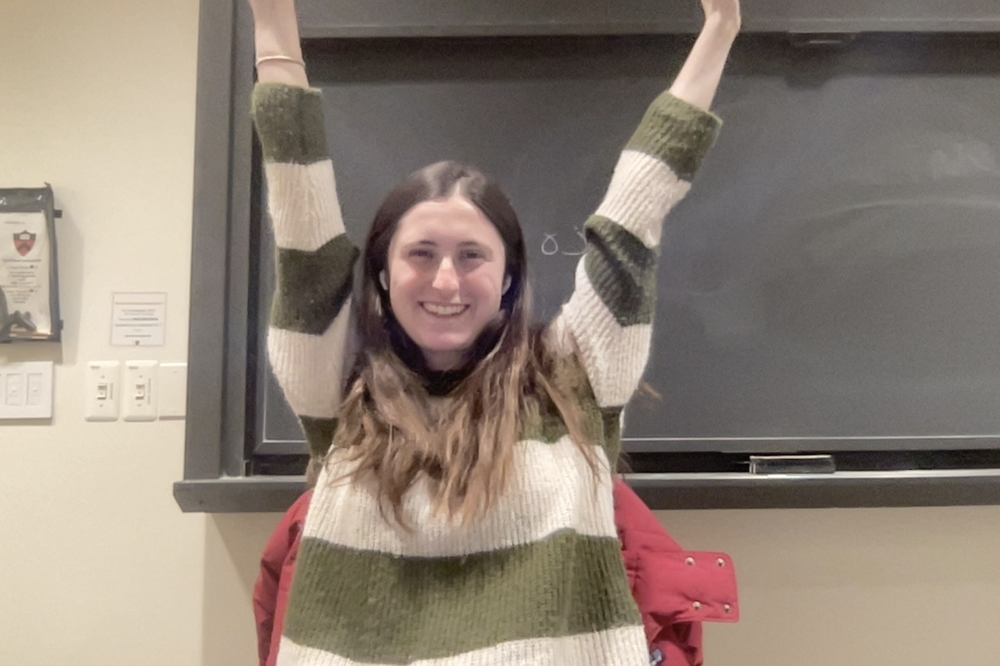

I currently work as a data visualization developer at Fathom Information Design in Boston, MA. I am passionate about using computational techniques to find and tell new stories.
I previously interned on the data and graphics team at the Financial Times, reporting on international student visa restrictions, record-setting heat, and the business of ICE deportation flights. Before that, I interned at OpenSecrets, conducting data analysis and reporting on lobbying and influence.
I graduated from Princeton University in 2025 with a major in computer science and a minor in history. On campus, I led the features section of The Daily Princetonian, worked as a Writing Center Fellow, and researched how machine learning can help readers draw connections across an oral history archive.
